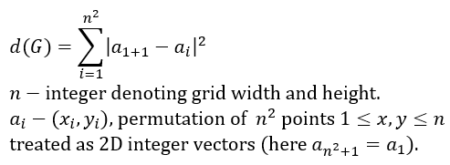

Grid size: 1
d(G): 0
c(G): 0
- Hold left mouse button: connect points with an edge.
- Hold right mouse button: disconnect points by removing edge between them (if there is one).
This page was made to aid solving graph connection related problems. Here are some of those problems.
Problem 1: Given Hamiltonian cycle whose edges do not self-intersect, find such cycle that maximises d(G).
Problem 2: Given Hamiltonian cycle whose edges do not self-intersect, find such cycle that minimises c(G).

Problems author: Giedrius Alkauskas